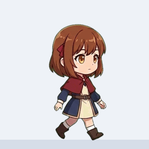
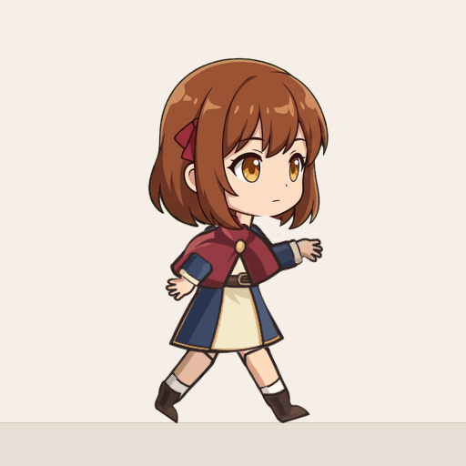
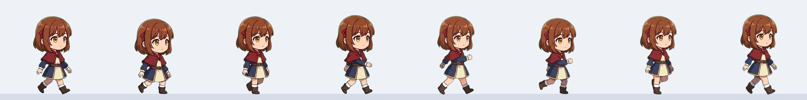
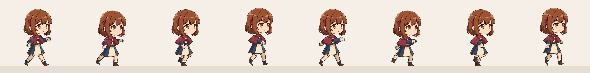
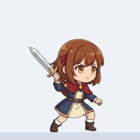
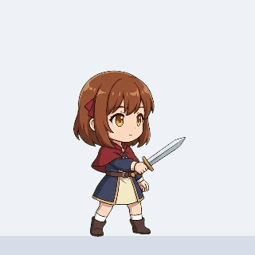
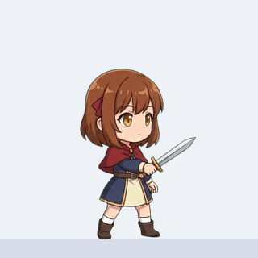
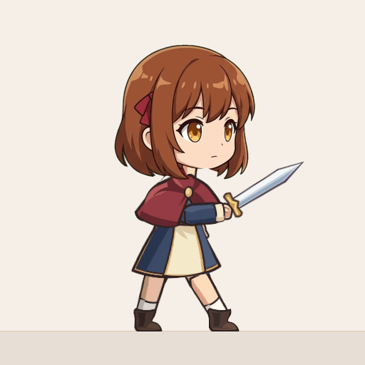
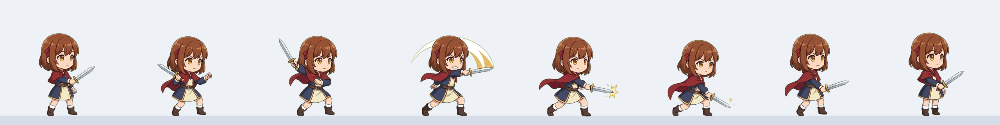
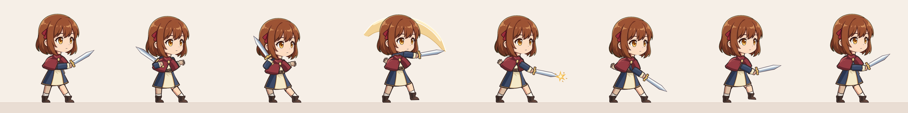

ちびキャラ 2Dアニメ比較：v1 → v2 → ①精密ロック → ③ボーン駆動
同じ基準画・同じ総時間（歩き 560ms / 攻撃 600ms）で4段階を並べて見比べられます。
1. 歩き（Walk）— 計 560ms
v1 · 4コマ均等
v2 · 8コマ素出し
① v2-locked · 精密ロック

③ v3-rig · ボーン駆動

① 精密ロック（AIコマ描き） 全8コマ

③ ボーン駆動ハイブリッド 全8コマ

2. 攻撃（Attack）— 計 600ms
v1 · 4コマ均等

v2 · 8コマ素出し

① v2-locked · 精密ロック

③ v3-rig · ボーン駆動

① 精密ロック（AIコマ描き） 全8コマ

③ ボーン駆動ハイブリッド 全8コマ
